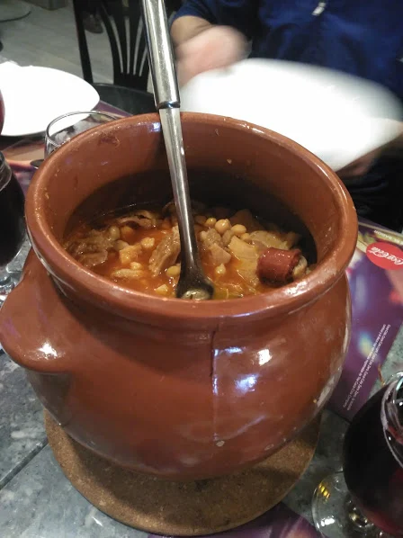
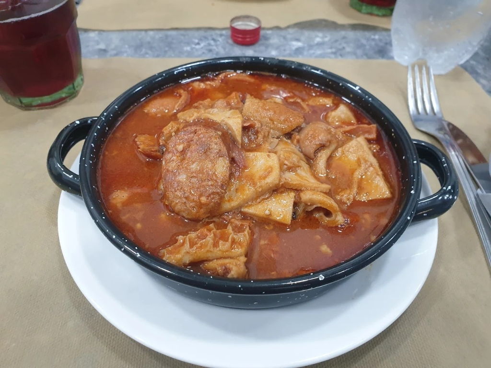

Tu selección está vacía.
Explorar Carta
El Sabor de lo Casero en Covibar
Comida casera con cariño en Rivas
Especialidad en desayunos tradicionales, raciones generosas para compartir en terraza y los mejores guisos diarios preparados con ingredientes frescos de toda la vida.
Terraza Peatonal
Disfruta de tus tapas y cañas en nuestra tranquila terraza al aire libre en la Plaza de Pau Casals.
Guisos Diarios
Cuchara tradicional elaborada a fuego lento. Lentejas, cocido madrileño, fabada y más.
Ambiente Familiar
Un trato acogedor y cercano que te hará sentir como si estuvieras comiendo en casa de tu abuela.

Guisos diarios elaborados a fuego lento

Raciones y cañas en Bar Poleo
Bienvenido a nuestro rincón
Cercanía, tradición y raciones abundantes
El Bar El Poleo de Deborah es el punto de encuentro por excelencia en la Plaza de Pau Casals de Covibar (Rivas-Vaciamadrid).
Nos esmeramos día a día por ofrecer comida casera honesta y abundante a precios populares. Ven a disfrutar de un espectacular desayuno con café italiano y tostadas de pan rústico, o visítanos a mediodía para degustar nuestros famosos guisos del día y raciones variadas preparadas por Deborah y su equipo.
Atención cercana y amable a cada cliente.
Especialistas en cocido madrileño, callos con garbanzos y cachopo.
Ambiente peatonal seguro e ideal para ir con niños.
¿Por qué somos el rincón favorito de Covibar?
7 Razones para Visitarnos
Lo que hace que el Bar El Poleo de Deborah sea un lugar entrañable en Rivas, uniendo tradición y la mejor atención.
1
El Café de la Mañana
Despierta con nuestro café italiano de tueste natural y nuestras tostadas crujientes de pan rústico con tomate natural rallado y aceite de oliva.
2
La Jugosa Tortilla
Elaborada cada mañana por Deborah con patatas seleccionadas, cebolla pochada en su punto y una textura increíblemente jugosa.
3
Guisos de Cuchara
Cocido madrileño completo, fabada asturiana o lentejas caseras preparadas a fuego lento con ingredientes tradicionales.
4
Terraza Peatonal
Un espacio peatonal en la Plaza de Pau Casals, perfecto para tomar cañas al sol o tapear en familia con total seguridad.
5
Raciones de verdad
Nuestras raciones son generosas, abundantes y recién elaboradas. Disfruta de nuestras croquetas caseras o los chopitos tiernos.
6
Trato Familiar
Un ambiente acogedor donde la cercanía, la simpatía y el buen servicio de Deborah y el equipo te harán sentir como en casa.
7
WhatsApp Assistant
Encarga tus platos favoritos desde nuestra carta digital y recógelos en el local sin esperas ni rodeos innecesarios.
Servicio para recoger
Asistente de Pedidos por WhatsApp
¿Quieres comer en casa o en la oficina? Encarga tu pedido online de forma rápida.
Agrega los platos que deseas de la carta digital de arriba, rellena tu nombre y la hora estimada de recogida, y haz clic en "Enviar Pedido". Se abrirá un chat de WhatsApp con tu pedido ya redactado y sumado.
1
Selecciona los platos
Haz clic en el botón "+ Añadir" en cualquiera de las especialidades de nuestra carta.
2
Revisa e introduce tus datos
Revisa la lista en tu carrito de la derecha, escribe tu nombre y define la hora de recogida.
3
Confirma por chat
Envía el mensaje automático. Deborah o su equipo te confirmarán por el chat cuando esté en marcha.
Tu Carrito
0 platos
Nuestros clientes hablan
Opiniones en Google Maps
¿Cómo venir?
Contacto y Localización
Te esperamos en la peatonal Plaza de Pau Casals de Covibar, en Rivas-Vaciamadrid. Ven a disfrutar de una buena cerveza o comida en un ambiente relajado.
-
Dirección
Plaza de Pau Casals, 4, 28523 Rivas-Vaciamadrid, Madrid (Junto a Calzados Jumar)
-
Llámanos por Teléfono
Horario de Apertura
| Lunes a Sábado | 08:00 – 23:00 h |
| Domingos | Cerrado por descanso |
*La cocina del bar sirve comidas de 13:00 a 16:30 y cenas de 20:00 a 22:30.